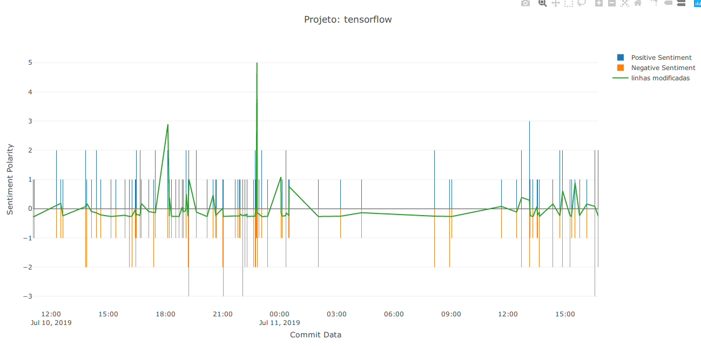
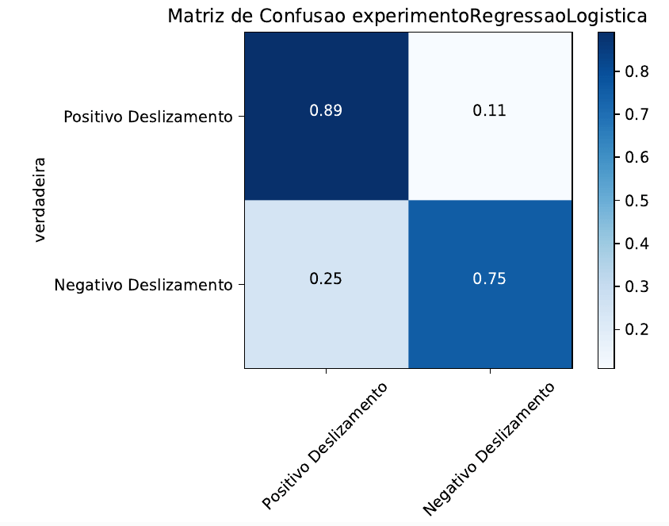
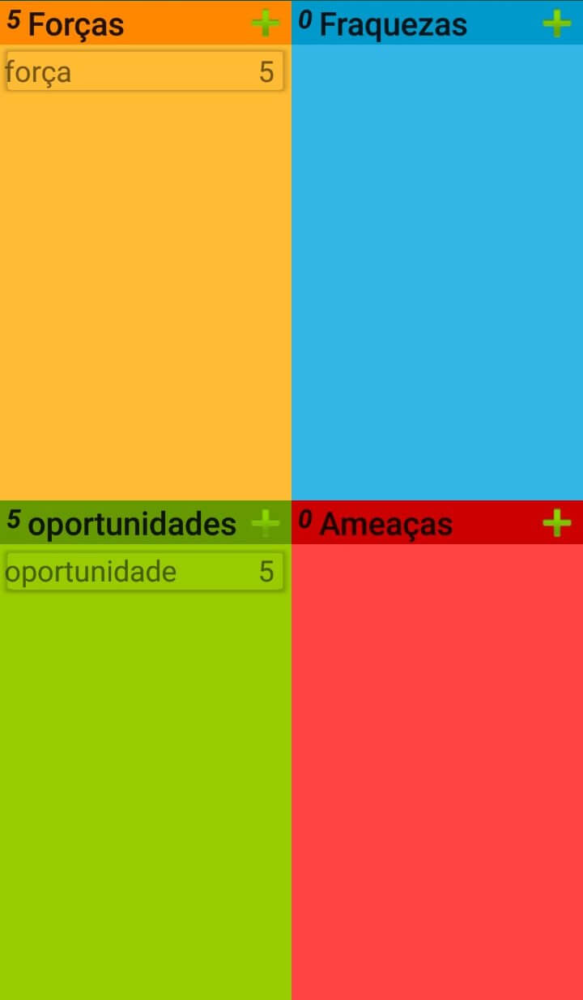

DeepLearning.ai Deep Learning Certificate
At this course, I learned the foundations of neural networks and deep learning,
how to lead an artificial intelligence project and, more specifically, I learned Convolutional networks,
RNNs, LSTM,
Adam, Dropout, BatchNorm, Xavier/He initialization. I did case studies projects with
healthcare, autonomous driving, face recognition, voice recognition, style transfer (pictures), video
object recognition, sign
language reading, music
generation, and natural language
processing in Python, Keras and TensorFlow.
Skills:
Python, Tensorflow, numpy, keras.

visualization of Brazillian politicians behavior at twitter
This visualization project mainly concerns with brazilian politicians dissemination of ideas at their
capacity to disseminate them along the social media.
This work contains analisys from sentiment of content to a graph of mentions this people receive and the
ways to post content on Twitter (web, Iphone, Android, automated services...)
Skills:
consume social medias APIs, d3.js, data visualization, Flask API, pandas, scikit-learn, NLTK, numpy,
html5, heroku.
Paraíba do Sul river's basin analisys

Analisys of Paraíba do Sul's basin stream flow measurement stations.
Skills:
Python, Matplotlib, seaborn, Keras, pandas, numpy, heroku, html5.

EDA of the two Largest mobile app store datasets

This Exploratory Data Analysis aims to answer first questions about dataset such as How size affects the
rate? how monetize the application in each mobile app store? and which is the best app store to
beginners?
Skills:
Python, Pandas, Matplotlib, seaborn, scikit-learn, k-means, numpy.
Dashboard for visualization of the two Largest mobile app store statistics

What-if Business intelligence Dashboard of Google Play Store and Apple Store, it offers visualization of
size, the number of apps compared to the price, age-range and rate.
Skills:
Google Data Studio.
Sentiment vs produtivity in a GitHub Project

Tensorflow's GitHub repository graph of productivity (lines of code committed) and sentiment in the
commit message, the sentiment was classified by the sentiStrength-se project.
Skills:
Python, Rest API, regex, plotly.
LandSlide prediction

This project applies linear regression, NaiveBayes, SVM, Logistic Regression, MultiLayer Perceptron to
classify if a landslide are going to happen or not in Juiz de Fora - MG.
Skills:
Python, Pandas, Matplotlib, seaborn, scikit-learn, numpy, keras.
Paraíba do Sul river's basin analisys and 7-days ahead streamflow forecaster

long-term Forecaster of stream flow in Paraíba do Sul's Basin with LSTM.
Skills:
Python, Pandas, scikit-learn, numpy, keras.
brazilian's ENA-Sud time series forecaster

Forecasting
ENA SUD, a Brazilian's metric to hidric energy, with Time delayed neural networks and k-means to
group months.
Skills:
Python, Pandas, Matplotlib, seaborn, scikit-learn, numpy, keras.
brazilian's ENA-Sud time series analisys

analisys of
ENA SUD with monte carlo scenary generation and prediction.
Skills:
Python, Pandas, Matplotlib, seaborn, scikit-learn, numpy, keras, scipy-stats.
UOL Main Page Scrapper

Uol is one of the most popular news website in Brazil, This is a scrapper of the principal webpage.
Skills:
Shell Script, wget.
The Wall Street Journal headlines Scrapper

Wall Street Journal is one of the world's most influente newspaper, This is as headline scrapper with
selenium and regex.
Skills:
Python, Selenium, regex.
Swot Analysis App

Simple App to apply Swot analysis in a mobile way.
Skills:
JAVA, Android, SQLite, MVVM, ROOM.